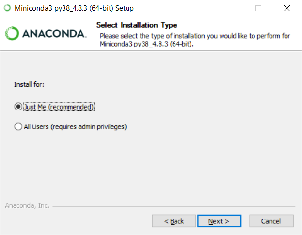

Installationsvejledning¶
Generelt¶
Som grundlag for alt programmel der installeres i forbindelse med FIRE benyttes Conda. Conda er et værktøj der oprindeligt er udviklet til Python-udviklere med henblik på nemt at kunne installere moduler og holde styr på forskellige versioner af samme modul. I dag er Conda et mere generelt værktøj som gør det nemt at installere mange forskellige programmer. Læs mere om Conda her
Installation¶
Der er en række trin der skal gennemføres for at få en komplet installation. Herunder tager vi dem et ad gangen
Git¶
Installer Git fra Software Centeret. Åbn "Software Center" via Startmenuen. Søg efter "git" og installer det.

Oracle Instantclient¶
Installer Oracle instantclient fra Software Centeret. Åben "Software Center" via Startmenuen. Søg efter "Oracle", der dukker flere muligheder op. Den korrekte er "Oracle 12.1.0.1 Client 64bit - Install" (versionsnummeret er muligvis anderledes). Følg instruktionerne på skærmen.
{kind=link}
Conda¶
Download og kør Miniconda3-latest-Windows-x86_64.exe.
{kind=link}
Installationen er forholdsvis triviel, og man kan trykke "next" i alle trin og slutte af med "install". Det indbefatter at Conda kun installeres til den lokale bruger ("just me") og at ingen af de avancerede muligheder slås til.
{kind=link}
{kind=link}

Når Conda er installeret kan du nu i start menuen finde "Anaconda Prompt (miniconda3)" Alle efterfølgende kommandoer i denne installationsvejledning skal afvikles i denne terminal. Det anbefales at lave en genvej til "Anaconda Prompt" i Windows' proceslinjen (åben programmet, højreklik på ikonet i proceslinjen, vælg "fastgør til proceslinje").
FIRE¶
Note
Det er for nuværende mere kompliceret at installere koden end det bliver i fremtiden. Hav tålmodighed, der er smartere løsninger på vej!
Åbn "Anaconda Prompt". Start med at lave en ny mappe til FIRE koden og download den med git:
> mkdir C:\fire
> cd C:\fire
> git clone https://github.com/Kortforsyningen/FIRE.git
{kind=link}
Initialiser et "conda environment" til FIRE:
> cd FIRE
> conda env create --file environment.yml
Vær tålmodig, det kan godt tage lang tid.
{kind=link}
Undervejs ser det således ud:
{kind=link}
Gør som conda siger og aktiver dit nye "fire environment":
> conda activate fire

Installer FIRE:
> pip install -e .
Konfigurationsfil¶
For at FIRE kan forbinde til databasen er det nødvendigt at tilføje en konfigurationsfil til systemet hvori adgangsinformation til databasen er registreret. Konfigurationsfilen er en INI fil, der er struktureret på følgende måde
[connection]
password = <adgangskode>
username = <brugernavn>
hostname = <netværksadresse>
database = <databasenavn>
service = <servicenavn>
Note
Tag fat i en kollega for at få oplyst brugernavn, adgangskode osv.
Under Windows placeres konfigurationsfilen i en af følgende stier:
C:\Users\<brugernavn>\fire.ini
C:\Users\Default\AppData\Local\fire\fire.ini
og på et UNIX-baseret system placeres filen et af følgende steder:
home/<brugernavn>/fire.ini
home/<brugernavn>/.fire.ini
/etc/fire.ini
Flame - QGIS plugin¶
Note
Installationsvejledning til Flame afventer beslutninger om deployment procedurer.